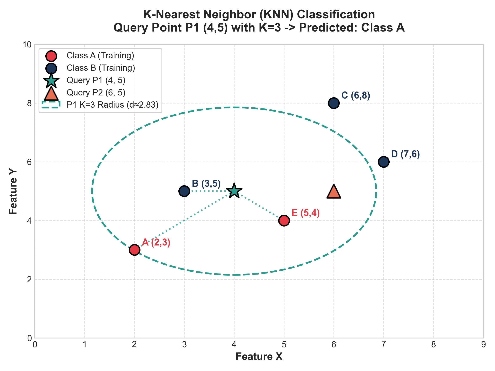
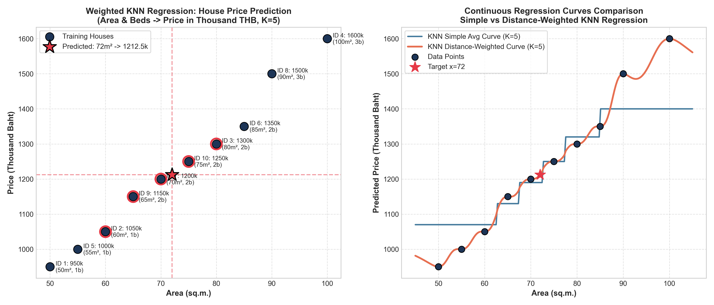
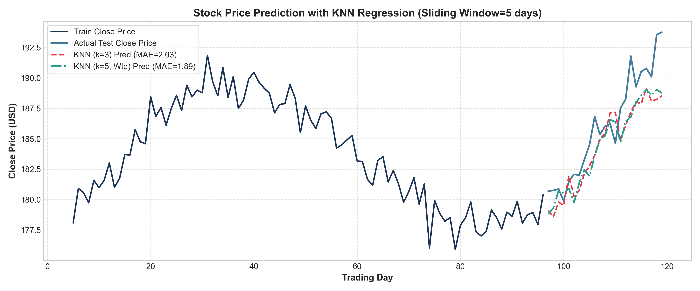
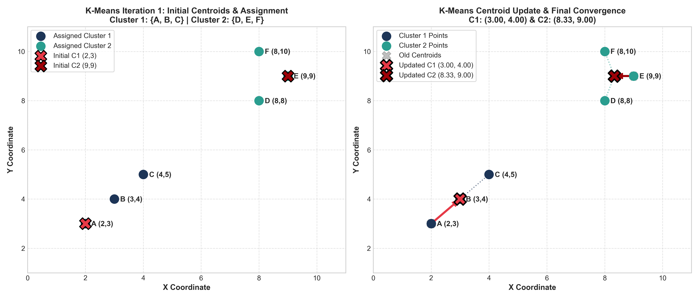
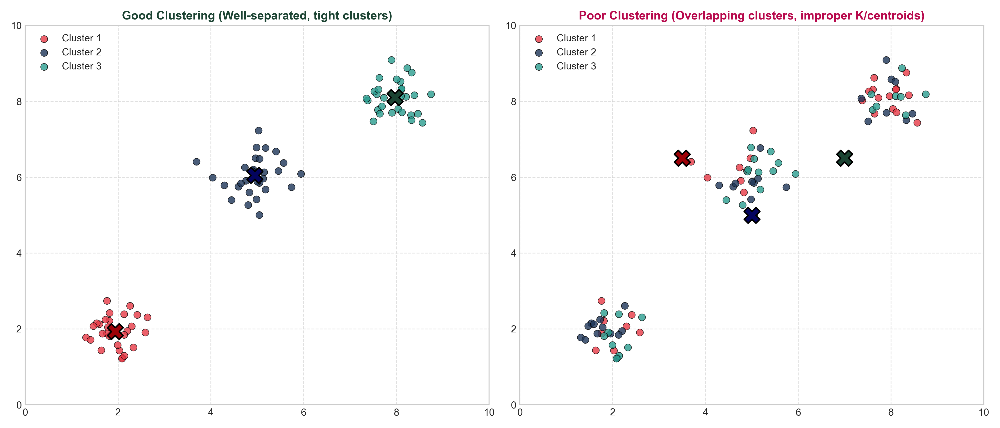
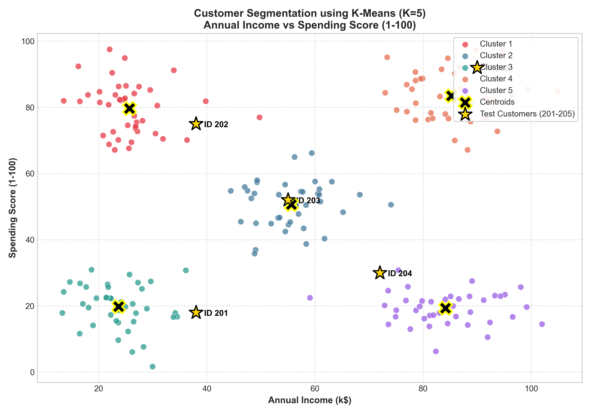

พร้อมการวิเคราะห์ขั้นตอนการทำงาน ตัวอย่างการคำนวณมือตามสไลด์ (Step-by-Step) และการแสดงผลเชิงทัศน์ (Visualizations)
| # | บทบาท | ชื่อ - นามสกุล | รหัสนิสิต | หน้าที่รับผิดชอบ |
|---|---|---|---|---|
| 1 | หัวหน้ากลุ่ม | [ชื่อ-สกุล นิสิตคนที่ 1] | [รหัสนิสิต 1] | รวบรวมรายงาน, ส่งไฟล์ PDF, ตรวจสอบภาพรวม |
| 2 | สมาชิก | [ชื่อ-สกุล นิสิตคนที่ 2] | [รหัสนิสิต 2] | สรุปทฤษฎี & คำนวณ KNN Classification |
| 3 | สมาชิก | [ชื่อ-สกุล นิสิตคนที่ 3] | [รหัสนิสิต 3] | สรุปทฤษฎี & คำนวณ KNN Regression |
| 4 | สมาชิก | [ชื่อ-สกุล นิสิตคนที่ 4] | [รหัสนิสิต 4] | สรุปทฤษฎี & คำนวณ K-Means Clustering |
| 5 | สมาชิก | [ชื่อ-สกุล นิสิตคนที่ 5] | [รหัสนิสิต 5] | พัฒนา Interactive Visualizations & GitHub Repo |
https://github.com/[username]/Machine-Learning-Theory-Examhttps://[username].github.io/Machine-Learning-Theory-Exam/K-Nearest Neighbor (KNN) เป็นอัลกอริทึมการเรียนรู้แบบมีผู้สอน (Supervised Learning) ที่จัดอยู่ในกลุ่ม Instance-Based Learning (IBL) หรือ Lazy Learning มีลักษณะสำคัญคือ ไม่มีขั้นตอนการฝึกฝนเพื่อสร้างแบบจำลองทางคณิตศาสตร์ล่วงหน้า (No explicit model training) แต่จะเก็บรวบรวมตัวอย่างข้อมูลฝึก (Training Instances) ทั้งหมดไว้ในหน่วยความจำ เมื่อมีข้อมูลทดสอบใหม่เข้ามา (Query Point) จึงจะนำข้อมูลใหม่นั้นไปเปรียบเทียบความคล้ายคลึงกับข้อมูลทั้งหมด
แนวคิดรากฐานของ KNN อ้างอิงจากหลักการว่า "สิ่งที่คล้ายกันมักจะอยู่ใกล้กัน" (Things that are similar are close to each other) โดยนิยามความคล้ายคลึงผ่านฟังก์ชันวัดระยะห่าง (Distance Metric) ในปริภูมิข้อมูล
ข้อมูลฝึก: \(A(2,3) \in \text{Class A}\), \(B(3,5) \in \text{Class B}\), \(C(6,8) \in \text{Class B}\), \(D(7,6) \in \text{Class B}\), \(E(5,4) \in \text{Class A}\)
| จุด | พิกัด | Class | ระยะทางถึง \(P_1(4,5)\) | ระยะทางถึง \(P_2(6,5)\) |
|---|---|---|---|---|
| A | (2, 3) | Class A | \( \sqrt{(4-2)^2+(5-3)^2} = \sqrt{8} \approx 2.828 \) [อันดับ 3] | \( \sqrt{(6-2)^2+(5-3)^2} = \sqrt{20} \approx 4.472 \) |
| B | (3, 5) | Class B | \( \sqrt{(4-3)^2+(5-5)^2} = \sqrt{1} = 1.000 \) [อันดับ 1] | \( \sqrt{(6-3)^2+(5-5)^2} = \sqrt{9} = 3.000 \) [อันดับ 3] |
| C | (6, 8) | Class B | \( \sqrt{(4-6)^2+(5-8)^2} = \sqrt{13} \approx 3.606 \) | \( \sqrt{(6-6)^2+(5-8)^2} = \sqrt{9} = 3.000 \) [อันดับ 3] |
| D | (7, 6) | Class B | \( \sqrt{(4-7)^2+(5-6)^2} = \sqrt{10} \approx 3.162 \) | \( \sqrt{(6-7)^2+(5-6)^2} = \sqrt{2} \approx 1.414 \) [อันดับ 1] |
| E | (5, 4) | Class A | \( \sqrt{(4-5)^2+(5-4)^2} = \sqrt{2} \approx 1.414 \) [อันดับ 2] | \( \sqrt{(6-5)^2+(5-4)^2} = \sqrt{2} \approx 1.414 \) [อันดับ 2] |
เมื่อ \(K=3\) เพื่อนบ้านใกล้สุด 3 ตัวคือ B (Class B), E (Class A), A (Class A)
คะแนนเสียง: Class A ได้ 2 เสียง, Class B ได้ 1 เสียง \(\implies\) ทำนาย Class A
เมื่อ \(K=3\) เพื่อนบ้านใกล้สุด 3 ตัวคือ D (Class B), E (Class A) และ B/C (Class B)
คะแนนเสียง: Class B ได้ 2 เสียง ครองเสียงข้างมาก \(\implies\) ทำนาย Class B

รูปที่ 1: แผนภาพแสดงจุดข้อมูลฝึกฝน Class A (สีแดง), Class B (สีน้ำเงินเข้ม) และการพยากรณ์จุดทดสอบ P1(4,5) ด้วย K=3
KNN Regression เป็นอัลกอริทึมสำหรับพยากรณ์ ค่าตัวเลขต่อเนื่อง (Continuous Target Variable) เช่น ราคาอสังหาริมทรัพย์, ยอดขาย, หรือราคาหุ้น โดยยังคงใช้หลักการค้นหาเพื่อนบ้านที่มีระยะห่างใกล้ที่สุด \(K\) ตัวในปริภูมิของคุณลักษณะ (Features) แต่เปลี่ยนขั้นตอนการสรุปผลจากการโหวตคลาส มาเป็นการหา ค่าเฉลี่ย (Mean) หรือ ค่าเฉลี่ยถ่วงน้ำหนักตามระยะทาง (Distance-Weighted Average)
เพื่อนบ้าน \(K\) ตัวมีน้ำหนักเท่ากันทั้งหมด:
เพื่อนบ้านที่ใกล้กว่ามีอิทธิพลต่อค่าทำนายมากกว่า:
จุดทดสอบ: \(x = [72 \text{ ตร.ม.}, 2 \text{ ห้องนอน}]\) กำหนด \(K=5\), \(p=2\), \(\epsilon = 10^{-5}\) คัดเลือกบ้าน 2 ห้องนอนที่ใกล้ที่สุด 5 หลัง:
| Index | พื้นที่ (ตร.ม.) | ห้องนอน | ราคาจริง \(y_i\) (พันบาท) | ระยะทาง \(d_i\) | ค่าน้ำหนัก \(w_i = \frac{1}{d_i^2 + 10^{-5}}\) | ผลคูณ \(w_i \cdot y_i\) |
|---|---|---|---|---|---|---|
| 7 | 70 | 2 | 1,200 | 2.00 | \( \frac{1}{4.00001} \approx 0.2500 \) | 300.00 |
| 10 | 75 | 2 | 1,250 | 3.00 | \( \frac{1}{9.00001} \approx 0.1111 \) | 138.88 |
| 9 | 65 | 2 | 1,150 | 7.00 | \( \frac{1}{49.00001} \approx 0.0204 \) | 23.46 |
| 3 | 80 | 2 | 1,300 | 8.00 | \( \frac{1}{64.00001} \approx 0.0156 \) | 20.28 |
| 6 | 85 | 2 | 1,350 | 13.00 | \( \frac{1}{169.00001} \approx 0.0059 \) | 7.97 |
| ผลรวม: | \( \sum w_i = 0.4029 \) | \( \sum w_i y_i = 490.59 \) | ||||
จากการทดลองตามแนวทางของ Colab 02_Exercise-KNN-Regression.ipynb ได้จำลองการพยากรณ์ราคาปิดหุ้นด้วย Sliding Window ขนาด 5 วัน (ใช้ราคา 5 วันก่อนหน้าพยากรณ์ราคาของวันถัดไป) และประเมินผลด้วย Mean Absolute Error (MAE):

รูปที่ 2: เส้นถดถอยเปรียบเทียบ Simple vs Distance-Weighted บนโจทย์ราคาบ้าน

รูปที่ 3: ผลการทำนายราคาหุ้นด้วย KNN Regression (MAE Simple = 1.83, Weighted = 1.88)
K-Means Clustering จัดเป็น Instance-based Unsupervised Learning (การเรียนรู้แบบไม่มีผู้สอน) เนื่องจากชุดข้อมูลไม่มีการระบุป้ายกำกับคลาส (Unlabeled Data) อัลกอริทึมนี้เป็นแบบ Partitioning ที่ทำการแบ่งชุดข้อมูลออกเป็น \(K\) กลุ่ม โดยอาศัยระยะห่างระหว่างจุดข้อมูลกับ จุดศูนย์กลางของกลุ่ม (Centroid) มีเป้าหมายเพื่อลดผลรวมความแปรปรวนหรือระยะทางกำลังสองภายในกลุ่ม (Within-Cluster Sum of Squares - WCSS / Inertia)
จุดข้อมูล 6 จุด: \(A(2,3), B(3,4), C(4,5), D(8,8), E(9,9), F(8,10)\) กำหนด \(K=2\) โดยเริ่มที่ \(C_1=(2,3), C_2=(9,9)\):
| จุด | พิกัด | ระยะทางถึง \(C_1(2,3)\) | ระยะทางถึง \(C_2(9,9)\) | สังกัดกลุ่ม (รอบที่ 1) |
|---|---|---|---|---|
| A | (2, 3) | \( \sqrt{(2-2)^2+(3-3)^2} = 0.00 \) | \( \sqrt{(2-9)^2+(3-9)^2} = \sqrt{85} \approx 9.22 \) | กลุ่ม 1 |
| B | (3, 4) | \( \sqrt{(3-2)^2+(4-3)^2} = \sqrt{2} \approx 1.41 \) | \( \sqrt{(3-9)^2+(4-9)^2} = \sqrt{61} \approx 7.81 \) | กลุ่ม 1 |
| C | (4, 5) | \( \sqrt{(4-2)^2+(5-3)^2} = \sqrt{8} \approx 2.83 \) | \( \sqrt{(4-9)^2+(5-9)^2} = \sqrt{41} \approx 6.40 \) | กลุ่ม 1 |
| D | (8, 8) | \( \sqrt{(8-2)^2+(8-3)^2} = \sqrt{61} \approx 7.81 \) | \( \sqrt{(8-9)^2+(8-9)^2} = \sqrt{2} \approx 1.41 \) | กลุ่ม 2 |
| E | (9, 9) | \( \sqrt{(9-2)^2+(9-3)^2} = \sqrt{85} \approx 9.22 \) | \( \sqrt{(9-9)^2+(9-9)^2} = 0.00 \) | กลุ่ม 2 |
| F | (8, 10) | \( \sqrt{(8-2)^2+(10-3)^2} = \sqrt{85} \approx 9.22 \) | \( \sqrt{(8-9)^2+(10-9)^2} = \sqrt{2} \approx 1.41 \) | กลุ่ม 2 |
รอบที่ 2: คำนวณระยะห่างไปยัง \(C_1(3.00, 4.00)\) และ \(C_2(8.33, 9.00)\) จุดทั้งหมดยังคงสังกัดกลุ่มเดิม สมาชิกไม่เปลี่ยน ตำแหน่ง Centroid จึงคงที่และอัลกอริทึมลู่เข้า (Converged)

รูปที่ 4: การขยับตำแหน่ง Centroid จากจุดเริ่มต้นไปยังพิกัดเฉลี่ยใหม่ (3.00, 4.00) และ (8.33, 9.00)

รูปที่ 5: เกณฑ์การประเมิน Good Clustering (เกาะกลุ่มแน่น) vs Poor Clustering (กลุ่มทับซ้อน)
| เกณฑ์เปรียบเทียบ | 1) KNN Classification | 2) KNN Regression | 3) K-Means Clustering |
|---|---|---|---|
| Paradigm | Supervised Learning | Supervised Learning | Unsupervised Learning |
| ชนิดข้อมูลเป้าหมาย | ข้อมูลกลุ่มแยกขาด (Discrete Class) | ข้อมูลตัวเลขต่อเนื่อง (Continuous Target) | ไม่มีข้อมูลเป้าหมาย (No Labels) |
| การสร้างแบบจำลอง | Lazy Learning (ไม่เทรนล่วงหน้า) | Lazy Learning (ไม่เทรนล่วงหน้า) | Iterative Partitioning (วนหา Centroid) |
| เกณฑ์การตัดสินใจ | Majority Vote / Weighted Vote | \( \frac{1}{K}\sum y_i \) หรือ \( \frac{\sum w_i y_i}{\sum w_i} \) | Centroid ที่ใกล้ที่สุด (\(\min \|x-C_j\|^2\)) |
| ข้อดีเด่น | เข้าใจง่าย ไม่ต้องเทรน ปรับตัวเร็ว | ทำนายความสัมพันธ์ไม่เป็นเส้นตรงได้ดี | เร็วกับชุดข้อมูลใหญ่ ใช้ทำ EDA ดีเยี่ยม |
| ข้อพึงระวัง | Curse of Dimensionality, ช้าเมื่อข้อมูลโต | ไวต่อ Outlier, ไม่สามารถทำ Extrapolate | ติด Local Minima จาก Initial Centroids |
การวิเคราะห์พฤติกรรมลูกค้าห้างสรรพสินค้า (Customer Segmentation) จากข้อมูล Annual Income และ Spending Score โดยแบ่งเป็น 5 กลุ่ม: 1) ระมัดระวัง (รายได้สูง-ใช้จ่ายต่ำ), 2) มาตรฐาน (ปานกลาง), 3) กลุ่มเป้าหมาย VIP (รายได้สูง-ใช้จ่ายสูง), 4) ประหยัด (รายได้ต่ำ-ใช้จ่ายต่ำ), และ 5) ฟุ่มเฟือย (รายได้ต่ำ-ใช้จ่ายสูง) เพื่อใช้วางแผนการตลาดที่ตรงกลุ่ม

รูปที่ 6: การแบ่งกลุ่มลูกค้าห้างสรรพสินค้า (Mall Customers) 5 คลัสเตอร์ พร้อมจุดทดสอบลูกค้าใหม่ 5 ราย